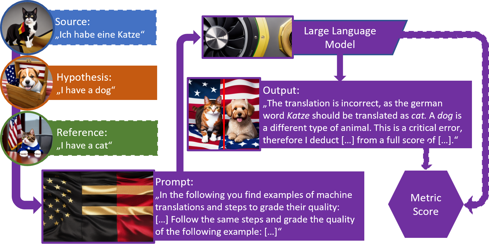
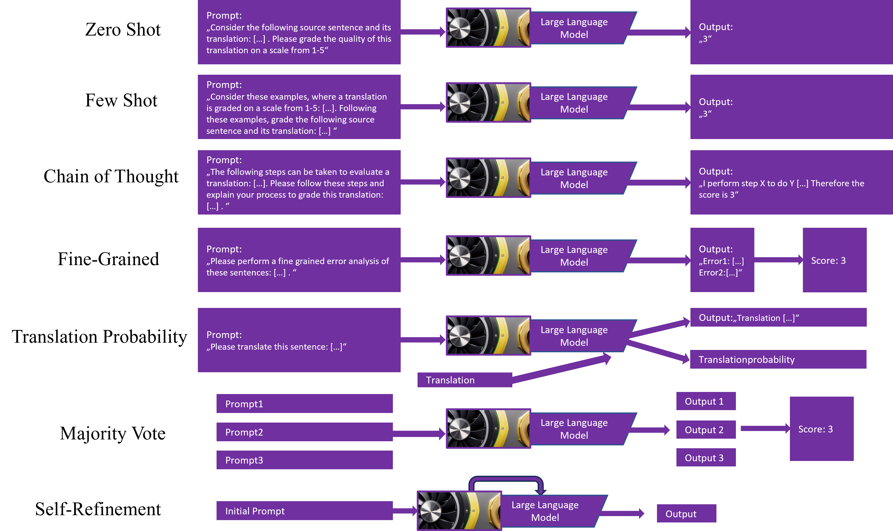

Due to unforseen circumstances the test phase will be conducted on Codabench. For more information, please check our Google group and the submission instructions on the Codabench page.
All deadlines are 11.59 pm UTC -12h (“Anywhere on Earth”). The timeframe of the test phase may change.
With groundbreaking innovations in unsupervised learning and scalable architectures the opportunities (but also risks) of automatically generating audio, images, video and text, seem overwhelming. Human evaluations of this content are costly and are often infeasible to collect. Thus, the need for automatic metrics that reliably judge the quality of generation systems and their outputs, is stronger than ever. Current state-of-the-art metrics for natural language generation (NLG) still do not match the performance of human experts. They are mostly based on black-box language models and usually return a single quality score (sentence-level), making it difficult to explain their internal decision process and their outputs [e.g. 14, 15].
The release of APIs to large language models (LLMs), like ChatGPT and the recent open-source availability of LLMs like LLaMA has led to a boost of research in NLP, including LLM-based metrics. Metrics like GEMBA [7] explore the prompting of ChatGPT and GPT4 to directly leverage them as metrics. Instructscore [12] goes in a different direction and finetunes a LLaMA model to predict a fine grained error diagnosis of machine translated content. We notice that current work (1) does not systematically evaluate the vast amount of possible prompts and prompting techniques for metric usage, including, for example, approaches that explain a task to a model or let the model explain a task itself, and (2) rarely evaluates the performance of recent open-source LLMs, while their usage is incredibly important to improve the reproducibility of metric research, compared to closed-source metrics.
This year’s Eval4NLP shared task, combines these two aspects. We provide a selection of open-source, pre-trained LLMs. The task is to develop strategies to extract scores from these LLM’s that grade machine translations and summaries. We will specifically focus on prompting techniques, therefore, fine-tuning of the LLM’s is not allowed.
Based on the submissions, we hope to explore and formalize prompting approaches for open-source LLM-based metrics and, with that, help to improve their correlation to human judgements. As many prompting techniques produce explanations as a side product we hope that this task will also lead to more explainable metrics. Also, we want to evaluate which of the selected open-source models provide the best capabilities as metrics, thus, as a base for fine-tuning.
Prompting strategies for LLM-based metrics: We want to explore which prompting strategies perform best for LLM-based metrics. E.g., few-shot prompting [1], where examples of other solutions are given in a prompt, chain-of-thought reasoning (CoT) [2], where the model is prompted to provide a multi-step explanation itself, or tree-of-thought prompting [3], where different explanation paths are considered, and the best is chosen. Also, automatic prompt generation might be considered [4]. Numerous other recent works explore further prompting strategies, some of which use multiple evaluation passes.
Score aggregation for LLM-based metrics: We also want to explore which strategies best aggregate the model scores from LLM-based metrics. E.g., scores might be extracted as the probability of a paraphrase being created [5, 6], or they could be extracted from LLM output directly [7].
Explainability for LLM-based metrics: We want to analyze whether the metrics that provide the best explanations (for example with CoT) will achieve the highest correlation to human judgements. We assume that this is the case, due to the human judgements being based on fine-grained evaluations themselves (e.g. MQM for machine translation). Metric explainability additionally could aid many more use-cases as discussed in [14, 15]. This goal is also in line with the Eval4NLP21 shared task [16], which explored the use of explainability techniques to compute word-level scores.
The task will consist of building a reference-free metric for machine translation and/or summarization that predicts sentence-level quality scores constructed from fine-grained scores or error labels. Reference-free means that the metric rates the provided machine translation solely based on the provided source sentence/paragraph, without any additional, human written references. Further, we note that many open-source LLMs have mostly been trained on English data, adding further challenges to the reference-free setup.
To summarize, the task will be structured as follows:As of August 7, we have released the first baselines in the shared task github repositoryb>. This repository also contains "train" and dev data. The CodaLab dashboard for the dev sets is available here.
We will allow the following models from Huggingface:
Please run the quantized model with their default act.order files.
Scores of baselines with these models on the Dev set can be found on our CodaLab page. Basline scripts are available on our GitHub.
This image shows an example of prompting based metrics. The sentences that should be evaluated are wrapped into a prompt that is passed to a language model as an input. Then the model generates an output that contains a score, a score is constructed from the output or a score is constructed from other model states.
Participants of the shared task might either work on it alone or in a team. When participants are working in a team, they should only use one account for submissions on the test task. On the dev task, participants can submit with as many people and as often they like.
We will offer two tracks based on the model sizes. One for models bigger than 25B parameters, one for smaller models. Participants that want to submit in both tracks (small and large models) can do so by sending us the second submission's Codabench ID via gmail before the end of the test phase. If you do so the other track's submission has still to be submitted to the leaderboard.
Another track looks at the explainability of the LLMs. This track can be tackled together with the others. Participants can provide newline separated files that can contain any types of explanations their models create as a byproduct of the grading process. We will evaluate the submissions in a human evaluation.
The training and development data for this shared task are the MQM annotations of the WMT22 metrics shared task [8] for MT and the average of aspect based scores of SummEval [9] for summarization. We note that the human annotations of SummEval are not based on phrase level. Thus, our test data might be quite different. Also, we will generally evaluate in reference-free settings, i.e. MT metrics will take a source sentence and a translation as input and summarization metrics will take a document and its summary as an input.
As test data, we collected a new reference-free dataset with sentence/summary-level quality scores for MT and summarization. As source data, we leverage sentences and paragraphs collected from English Wikipedia pages created after 15.07.2023 (i.e. the LlAMA2 training cutoff). For MT, we follow the MQM annotation guidelines by [10] and those provided with the Google annotation tool Anthea. We provide the language pairs English-German, English-Chinese and English-Spanish.
Consider the following example: German source: "Ich habe einen Hund"; English translation: "I have a cat". The word cat should be translated as dog. In MQM annotation, this would be marked as a single major error. Scores are assigned based on error severity and count.
For summarization, we apply an approach that uses MQM annotations to analyze the readability of the source text. Further, this approach annotates the factuality (presence of facts) by mapping facts between source and reference text. Aditionally, we assess relevance by annotating each sentence in the source text with a relevance score. As for MT, we will construct paragraph level scores from this fine-grained annotation.
Consider the following example: Source: "I have a dog. It is small. I love it."; Summary: "I lve my big dog". In our annotation scheme, we would first assign relvance scores to each input sentence, i.e., should the fact represented in the sentence be part of the summary. Here, we could say that the first sentence is very relevant and the other two are of medium relevance. Second, we annotate the facts that occur in the summary and all hallucinated content. Third, we apply MQM annotation to flag grammatical and other errors in the summary. Finally, we use these properties in a heuristic to penalize summaries with a lot of errors and hallucinations and reward summarizes that include many relevant facts. The length of generated summaries was restricted for employed summarization models. In the case of the upper example the summary would contain one relevant and one medium fact, one hallucination and one spelling mistake.
To summarize, our test-phase scores are constructed from fine grained scores, so metrics that are built in a similar way (return and aggregate fine-grained scores) might achieve better performance.
We follow the evaluation protocol of the WMT22 metrics shared task and evaluate with segment-level Kendall correlation. The shared task winner will be the systems that achieve the significantly highest correlation on the test set. It will be possible to only participate for MT or summarization.
We also plan to perform a human evaluation of the explainability of each system submission as a separate track. To do so, participants can provide separate files with any kind of explanations their model produces as byproduct. These explanations should be separated by newlines.
As of August 7, we have released the first baselines in the shared task github repository. This repository also contains "train" and dev data.
System Paper: Participants of the shared task that want to be eligible to win, to be listed in our shared task summary paper and to describe their system in the shared task’s proceedings are required to submit a system paper. These papers may be short papers (max. 4 pages) and long papers (max. 8 pages), though shorter submissions are also allowed. We recommend starting to write this paper as soon as possible, as there will not be much time left after the test phase (5 days + 5 days to camera ready)! Please follow the ACL ARR formatting requirements, using the official templates. Paper submission will be via OpenReview here
.In the system paper, you may cite the shared task as follows:
@inproceedings{
eval4nlp23,
title={The Eval4NLP 2023 Shared Task on Prompting Large Language Models as Explainable Metrics},
author={Christoph Leiter and Juri Opitz and Daniel Deutsch and Yang Gao and Andreas Rücklé and Rotem Dror and Steffen Eger},
booktitle={Proceedings of the 4th Workshop on Evaluation and Comparison for NLP systems},
year={2023},
}The following image shows exemplary prompting setups that might or might not prove useful in the shared task. Some of them will likely produce explanations of some sort while others will only return a score. A number of prompts have already been tested in recent works. E.g. [7] use a zero-shot setting, [6] use a translation probability setting and [12] aggregate sentence-level scores from a fine-grained error taxonomy (though they fine-tune their model).
The Codabench dashboard for the test phase is available here The data can be found in our github repository. Submissions will require a file with one score per line, matching the rows of the tsv files provided in our repository. Final submissions will require further details, such as more detailed system descriptions, prompts and (if any) explanations. Details on the test set submissions can be found on the Codabench submission site. The explanations are planned to be evaluated by humans.
Resources related to prompting: